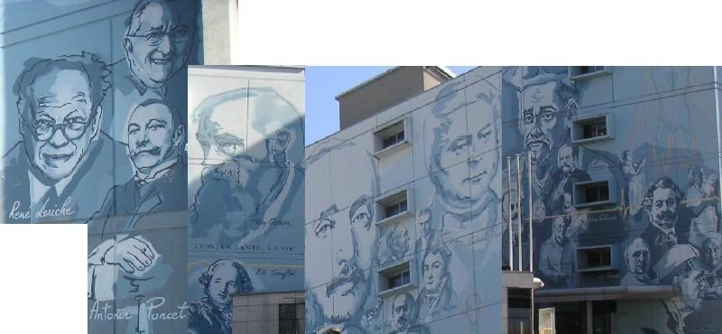
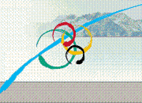

About NovoCIB
NOVOCIB is a French biotechnology company which has specialized in the study of nucleotide and nucleoside metabolism. We supply enzymes, enzymatic assays, and analytical services for the Drug Discovery, Life Science and Food Quality control..
NOVOCIB is a French biotechnology company which has specialized in the study of nucleotide and nucleoside metabolism. We supply enzymes, enzymatic assays, and analytical services for the Drug Discovery, Life Science and Food Quality control..
| NOVOCIB is a member of the Rh�ne-Alpes region's biocluster, LyonBioPole, a world center of excellence. |
| NOVOCIB occupies 80m² of Class II facilities, laid-out in five independent, atmosphere-controled labs, and has invested in high-quality labs equipment: • Cell Culture • Analytical Chemistry • Biochemistry • Cloning & Molecular Biology • Production of recombinant proteins |
 2009, December: Dr Balakireva, CEO & Founder of NOVOCIB was named "Femme d�cideur de l'ann�e (women and decision-makers of the year) 2009" and won the Jury Prize from the Rhône-Alpes Regional Department of Caisse des Dépôts. 2009, December: Dr Balakireva, CEO & Founder of NOVOCIB was named "Femme d�cideur de l'ann�e (women and decision-makers of the year) 2009" and won the Jury Prize from the Rhône-Alpes Regional Department of Caisse des Dépôts. |
|
 2009, November: NOVOCIB was awarded with the "Talent de l'Innovation" in research category organized by Mag2 Lyon magazine in collaboration with the Regional Council of R�gion Rh�ne-Alpes, the Urban Community "Grand Lyon" and Lyon Chamber of Commerce and Industry. 2009, November: NOVOCIB was awarded with the "Talent de l'Innovation" in research category organized by Mag2 Lyon magazine in collaboration with the Regional Council of R�gion Rh�ne-Alpes, the Urban Community "Grand Lyon" and Lyon Chamber of Commerce and Industry. |
|
| 2005: Laureate of the National Contest for Innovative Companies (French Ministry of Research), “Création & Développement” category | |
| 2004: Laureate of the French Senate “Tremplin Entreprises” contest | |
| 2003: Laureate of the National Contest for Innovative Companies (French Ministry of Research), “Emergence” category (NOVOCIB project, before inception of the Company) | |
| In 2006, NOVOCIB was labelled by Novacité (Lyon Chamber of Commerce and Industry), a member of the European Business and Innovation Centre Network | 
|
| While conducting its research program on Hepatitis C Virus and anti-viral nucleoside analogues, NOVOCIB has developed a significant expertise in nucleotide and nucleoside metabolisms and now offers a range of unique products and services specifically designed for nucleotide analysis. |
NOVOCIB hails from Grenoble, a major high-tech city located at the foot of the Alpes, in the South-East of France, near Lyon. Région Rhône-Alpes is particularly active in the Life Science business fields and is one of the most growing regions in Europe. The company moved, in May 2006, in the former site of Merck-Lipha Santé, in the centre of Lyon the French historic Capital of the diagnostic industry and research against infectious diseases..
It was a great opportunity for NOVOCIB to be headquartered in this industrial site and benefit from the former Merck KGaA subsidiary's facilities and top-quality labs.
It was a great opportunity for NOVOCIB to be headquartered in this industrial site and benefit from the former Merck KGaA subsidiary's facilities and top-quality labs.
|  |
Région Rhône-Alpes is a very favourable economic environment where NOVOCIB benefits from high-value support and efficient helps from prestigious institutions and organizations.
| LyonBioPole,
the Rh�ne-Alpes region's biocluster, a world center of excellence. |
| Regional Council of Rhône-Alpes |
Novacit�, member of the European Business and Innovation Centre Network |
| ADERLY, Lyon Economic Development Agency |
| Oséo, French State tool to support small business development |
| GRAIN, Grenoble Alpes Incubation |